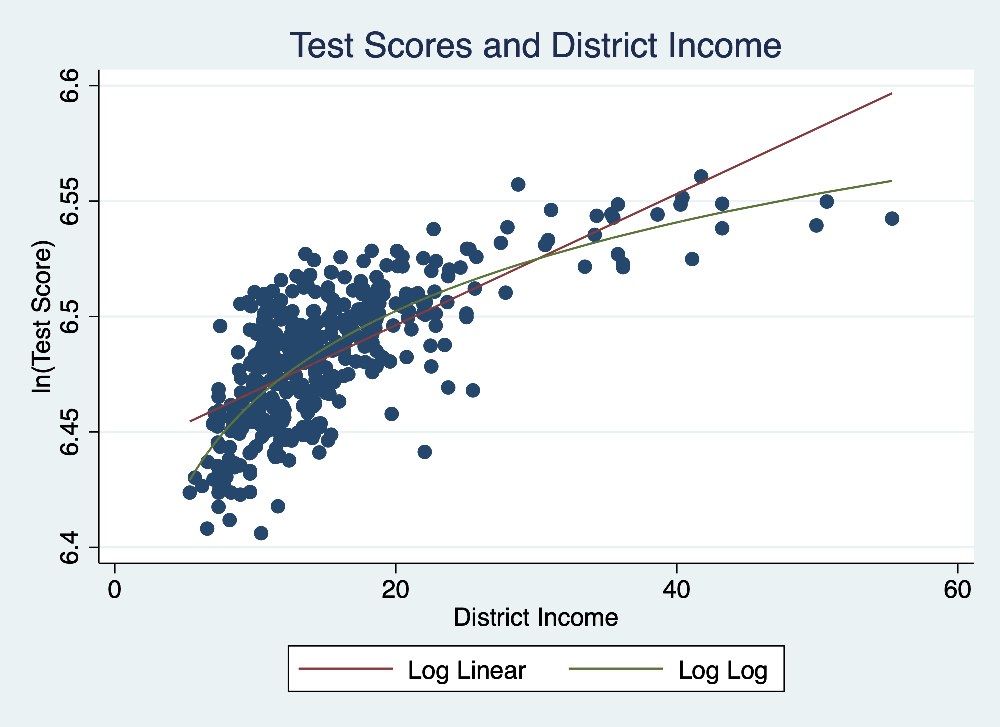

Nonlinear Regression Functions
EC295
Justin Smith
Wilfrid Laurier University
Fall 2022
#Introduction
Introduction
In all models we have studied, the regression slope is constant
When \(X\) changes by 1, \(Y\) changes by same amount regardless of value of \(X\)
Effect of changing \(X\) on \(Y\) also does not depend on other variables
This is not always the case
Ex: Effect of experience on wages may depend on level of experience
- Additional experience matters less for the very experienced
Ex: Effect of extra bedroom on house price may depend on square footage
- Might be bigger for larger houses
In this section we extend the model to allow nonlinearities
Introduction
All models we have examined are linear in the \(X\) variables
Sometimes this produces a bad fit to the data
Ex: Effect of district income on test scores
Next slide shows test scores plotted against income
A linear regression is estimated and plotted on top of data
Notice line does not fit data pattern well
Data takes more of a curved relationship
Extra income has bigger effect on test scores when income is low
Slope is steep at low income, flatter at high income
We can extend the regression to allow curvature in the line
Introduction
Nonlinear Functions of a Single Independent Variable
Quadratic Functions
Recall graph on previous slide
That line would fit better if curved
Effect of income on scores depends on income
Effect of income is large when income is low
Slope falls as income gets bigger
Called diminishing marginal returns
The easiest way to allow curvature is a quadratic function
A quadratic relationship between test scores and income is \[TestScore_{i} = \beta_{0} + \beta_{1}Income_{i} + \beta_{2}Income_{i}^2 + u_{i}\]
Quadratic Functions
The population regression function in this model is \[E[TestScore_{i}|Income_{i}] = \beta_{0} + \beta_{1}Income_{i} + \beta_{2}Income_{i}^2\]
This specification allows effect of income on test scores to depend on income
To see this, compute total change in the population regression \[\Delta E[TestScore_{i}|Income_{i}] = \beta_{1}\Delta Income_{i} + \beta_{2}\Delta Income_{i}^2\]
Divide both sides by \(\Delta Income_{i}\) \[\frac{ \Delta E[TestScore_{i}|Income_{i}]}{\Delta Income_{i}} = \beta_{1}+ \beta_{2}\frac{\Delta Income_{i}^2}{\Delta Income_{i}}\]
Quadratic Functions
When \(\Delta Income_{i}\) is small, we can approximate \(\frac{\Delta Income_{i}^2}{\Delta Income_{i}}\) \[\frac{\Delta Income_{i}^2}{\Delta Income_{i}} \approx 2Income_{i}\]
Plugging into the main equation \[\frac{E[TestScore_{i}|Income_{i}]}{\Delta Income_{i}} = \beta_{1}+ 2\beta_{2}Income_{i}\]
The effect of income on test scores has two components
\(\beta_{1}\), the effect of income on test scores when \(Income_{i} = 0\)
\(2\beta_{2}Income_{i}\), how the effect depends on income
Quadratic Functions
The signs of \(\beta_{1}\) and \(\beta_{2}\) determine shape of function
If \(\beta_{1} >0\) and \(\beta_{2} <0\) it has inverted u shape
Effect of income on test scores is positive when income is low, and decreases as income gets larger
After certain point, effect becomes negative
If \(\beta_{1} <0\) and \(\beta_{2} >0\) it has u shape
Effect of income on test scores is negative when income is low, and increases as income gets larger
After certain point, effect becomes positive
Estimate this equation by OLS the same way as before
Estimated effect of income on test scores is \[\frac{\Delta \hat{TestScore}_{i}}{\Delta Income_{i}} = \hat{\beta}_{1}+ 2\hat{\beta}_{2}Income_{i}\]
Quadratic Functions
Ex: estimated quadratic regression function \[\hat{TestScore}_{i} = 607.3 + 3.85 Income - 0.0423 Income^2\]
Estimated effect of income on test scores is \[\frac{\Delta\hat{TestScore}_{i}}{\Delta Income_{i}} = 3.85- 2(0.0423)Income_{i}\]
Quadratic Functions
Note how effect depends on level of income
If income = 20,000 \[\frac{\Delta \hat{TestScore}_{i}}{\Delta Income_{i}} = 3.85- 2(0.0423)(20) = 2.158\]
If income = 40,000 \[\frac{\Delta \hat{TestScore}_{i}}{\Delta Income_{i}} = 3.85- 2(0.0423)(40) = 0.466\]
If income = 60,000 \[\frac{\Delta \hat{TestScore}_{i}}{\Delta Income_{i}} = 3.85- 2(0.0423)(60) = -1.226\]
Quadratic Functions
Slope is high at low values of income, then falls as income grows larger
- At very high income, effect is negative
Function illustrated graphically on next slide
Several notable features
Since \(\hat{\beta}_{1} >0\) and \(\hat{\beta}_{2} <0\) it has inverted u shape
Effect initially steep and positive
Flattens as income goes higher
Becomes negative after a certain point
Fits pattern of data much better
Especially at the ends
Likely \(R^2\) would be higher in this regression
Quadratic Functions

Polynomial Functions
We can allow for more flexibility in function with higher powers of \(X\)
Ex: cubic, quartic, etc...
Call these functions polynomials
A polynomial relationship between \(Y\) and \(X\) of degree r is \[Y_{i} = \beta_{0} + \beta_{1}X_{i} + \beta_{2}X_{i}^2 + ... + \beta_{r}X_{i}^r +u_{i}\]
The “r” determines highest power in function
When \(r=2\) it is quadratic
When \(r=3\) it is cubic
Higher powers allow more bends in the function
- Can help fit data better
Effect of \(X\) on \(Y\) is more complicated with higher polynomials
Polynomial Functions
Computing effect can be more difficult with higher powers
Ex: estimated quadratic function \[\hat{Y}_{i} = \hat{\beta}_{0} + \hat{\beta}_{1}X_{i} + \hat{\beta}_{2}X_{i}^2\] \[\frac{\Delta \hat{Y}_{i}}{\Delta X_{i}} = \hat{\beta}_{1}+ 2\hat{\beta}_{2}X_{i}\]
Ex: estimated cubic function \[\hat{Y}_{i} = \hat{\beta}_{0} + \hat{\beta}_{1}X_{i} + \hat{\beta}_{2}X_{i}^2 + \hat{\beta}_{3}X_{i}^3\] \[\frac{\Delta \hat{Y}_{i}}{\Delta X_{i}} = \hat{\beta}_{1}+ 2\hat{\beta}_{2}X_{i} + 3\hat{\beta}_{3}X_{i}^2\]
and so on
Polynomial Functions
Testing Null that the Regression is Linear
We can test between polynomial and linear functions
Procedure is to use an \(F\)-test as discussed last chapter
First, estimate polynomial \[Y_{i} = \beta_{0} + \beta_{1}X_{i} + \beta_{2}X_{i}^2 + ... + \beta_{r}X_{i}^r +u_{i}\]
Then test between these hypotheses
\(H_{0}: \beta_{2} = 0, \beta_{3} = 0, ..., \beta_{r} = 0\)
\(H_{1}: \text{ at least one of }\beta_{2},\beta_{3}, ..., \beta_{r} \text{ is not zero}\)
Accepting null means function is linear
Rejecting means it is nonlinear in some way
Choosing the Degree of Polynomial
Higher order polynomials increase flexibility of the regression
But, if irrelevant can increase standard errors
- Multicollinearity will reduce precision of other estimates
Thus, it is important to properly specify degree of polynomial
Textbook suggests following procedure
Pick maximum value for \(r\) and estimate regression
Test null that \(\beta_{r}\) equals zero. If reject, keep in regression
If accept null in 2, reestimate with polynomial of degree \(r-1\)
Repeat 2-3 until you reject null hypothesis in 2
This is sequentially pruning model to get right specification
Logarithms
Common way to include nonlinearities is with logarithms
What is a logarithm?
Logarithm of \(x\) to base \(b\) is the \(y\) that solves \(b^{y} = x\) \[log_{b}(x) = y\]
Ex: If \(x\) is 1000, and the base \(b\) is 10, the logarithm of \(x\) is the exponent that turns 10 into 1000 \[log_{10}(1000) = 3\]
Increasing \(log_{10}(x)\) by one unit is like multiplying \(x\) by 10
10 is a common base, but it can be any number
Ex: Richter scale (for earthquakes) is a base-10 log scale
Logarithms
| x | 1 | 10 | 100 | 1000 | 10000 | 100000 |
| \(log_{10}(x)\) | 0 | 1 | 2 | 3 | 4 | 5 |
Economists often use the natural logarithm
Logarithm with b equal to \(e = 2.71828\)
Often written as \(ln(x)\)
Increasing \(ln(x)\) by one unit is like multiplying by 2.71828
Natural logarithms have one key useful property
- Small changes in \(ln(x)\) approximate a percentage change \[100 \times (ln(x +\Delta x) - ln(x)) =100 \times \Delta ln(x) \approx 100\times \left ( \frac{\Delta x}{x} \right )\]
Logarithms
Ex: let \(x = 100\) and \(\Delta x = 1\)
Actual percentage change is: \(100\times \left (\frac{101 - 100}{100} \right ) = 1\)
Log approximation is \(100 \times (ln(101) - ln(100)) = 100 \times (4.615 -4.605) =1\)
Useful for expressing \(X\), \(Y\), or both in percentage terms
If \(X\) changes by 1 unit, what is percentage effect on \(Y\)?
If \(X\) changes by 1% , what is effect on \(Y\)?
If \(X\) changes by 1%, what is percentage effect on \(Y\)?
The inverse of a natural logarithm is the exponential function \[x = e^{ln(x)}\]
- This will become useful in some situations
Log-Linear Model
A log-linear model is when \(Y\) is in logs, but \(X\) is not \[ln(Y_{i}) = \beta_{0}+\beta_{1}X_{i} + u_{i}\]
Often used when measuring the return to education
A common population regression model in this context is \[ln(wage) = \beta_{0} + \beta_{1}educ + u\]
The interpretation of \(\beta_{1}\) is \[\beta_{1} = \frac{\Delta ln(wage)}{\Delta educ}\]
Remember that \(100\times \Delta ln(wage)\) is roughly equal to % change in wage
Log-Linear Model
So if we multiply \(\beta_{1}\) by 100 then \[100\times \beta_{1} \approx \frac{\% \Delta wage}{\Delta educ}\]
- \(100\times \beta_{1}\) measures the % change in wage due to a 1-year increase in education
Appropriate if each year of education has equal proportional change in wage
- Increasing education raises wage by same percentage
In the general model \[100\times \beta_{1} \approx \frac{\% \Delta Y_{i}}{\Delta X_{i}}\]
Linear-Log Model
A linear-log model is when \(X\) is in logs, but \(Y\) is not \[Y_{i} = \beta_{0}+\beta_{1}ln(X_{i}) + u_{i}\]
One application is the effect of GDP on life expectancy \[expectancy= \beta_{0} + \beta_{1}ln(GDP) + u\]
Appropriate if proportional changes in GDP have same effect on expectancy
Larger increases in GDP are needed to get same effect on expectancy as countries get richer
\[\beta_{1} = \frac{\Delta expectancy}{\Delta ln(GDP)}\]
Linear-Log Model
If we divide \(\beta_{1}\) by 100 \[\frac{\beta_{1}}{100} = \frac{\Delta expectancy}{100 \times \Delta ln(GDP)} = \frac{\Delta expectancy}{\% \Delta GDP}\]
\(\frac{\beta_{1}}{100}\) measures effect of 1% change in GDP on expectancy
In the general model \[\frac{\beta_{1}}{100} = \frac{\Delta Y_{i}}{\% \Delta X_{i}}\]
It is relatively rare to see this model in practice
Log-Log Model
A log-log model is when both \(Y\) and \(X\) are in logs \[ln(Y_{i}) = \beta_{0}+\beta_{1}ln(X_{i}) + u_{i}\]
This is used to estimate the elasticity between \(X\) and \(Y\)
Suppose you want to know price elasticity of demand for ticket sales \[ln(sales)= \beta_{0} + \beta_{1}ln(price) + u\]
In this case \[\beta_{1} = \frac{\Delta ln(sales)}{\Delta ln(price)}\]
Log-Log Model
If we multiply and divide \(\beta_{1}\) by 100 \[\beta_{1} = \frac{100\times \Delta ln(sales)}{100 \times \Delta ln(price)} = \frac{\% \Delta sales}{\% \Delta price}\]
\(\beta_{1}\) measures percent effect on ticket sales from a 1% increase in price
- This is the price elasticity of demand for ticket sales
In the general model \[\beta_{1} = \frac{\% \Delta Y_{i}}{\% \Delta X_{i}}\]
Note that you do not need to alter \(\beta_{1}\) before interpreting
Visualizing Nonlinear Models
Visualizing Nonlinear Models
Visualizing Nonlinear Models
Visualizing Nonlinear Models
Visualizing Nonlinear Models
Visualizing Nonlinear Models
Example with Stata
We continue above with the relationship between test scores and district income
Below we estimate various nonlinear functions of income
Linear: \(TestScore_{i}= \beta_{0} + \beta_{1}Income_{i} + u_{i}\)
Quadratic: \(TestScore_{i}= \beta_{0} + \beta_{1}Income_{i} + \beta_{2}Income_{i}^2+ u_{i}\)
Log Linear: \(ln(TestScore_{i})= \beta_{0} + \beta_{1}Income_{i} + u_{i}\)
Linear Log: \(TestScore_{i}= \beta_{0} + \beta_{1}ln(Income_{i}) + u_{i}\)
Log Log: \(ln(TestScore_{i})= \beta_{0} + \beta_{1}ln(Income_{i}) + u_{i}\)
We will interpret coefficients in each
Example with Stata
First, create necessary variables
Then estimate regressions
**Create variables we need for the regression;
gen avginc2 = avginc^2;
gen lntestscr = ln(testscr);
gen lnavginc = ln(avginc);
**Estimate regressions;
regress testscr avginc;
estimates store linear;
regress testscr avginc avginc2;
estimates store quadratic;
regress lntestscr avginc;
estimates store loglinear;
regress testscr lnavginc;
estimates store linearlog;
regress lntestscr lnavginc;
estimates store loglog;Example with Stata
- Export results in easy to read table
. estout linear quadratic linearlog loglinear loglog, cells(b(star fmt(3))
se(par fmt(3))) starlevels(* 0.05 ** 0.01 ) stats(r2 r2_a rmse N,fmt(3 3 3 0 ));
---------------------------------------------------------------------------------------
linear quadratic linearlog loglinear loglog
b/se b/se b/se b/se b/se
---------------------------------------------------------------------------------------
avginc 1.879** 3.851** 0.003**
(0.091) (0.304) (0.000)
avginc2 -0.042**
(0.006)
lnavginc 36.420** 0.055**
(1.571) (0.002)
_cons 625.384** 607.302** 557.832** 6.439** 6.336**
(1.532) (3.046) (4.200) (0.002) (0.006)
---------------------------------------------------------------------------------------
r2 0.508 0.556 0.563 0.498 0.558
r2_a 0.506 0.554 0.561 0.497 0.557
rmse 13.387 12.724 12.618 0.021 0.019
N 420 420 420 420 420
---------------------------------------------------------------------------------------Example with Stata
Linear model
- Income increases by $1000, test scores increase by 1.879 points
Quadratic model
\(\frac{\Delta TestScore}{\Delta Income} = 3.851-2(0.042)Income\)
When Income = 0, if income increases by $1000, test scores increase by 3.851 points
\(\frac{\Delta TestScore}{\Delta Income}\) is smaller by 2(0.042) with each $1000 in income
When Income = 50000, if income increases by $1000, test scores fall by 3.851-2(0.042)50 = -0.349 points
Linear Log model
\(\frac{\beta_{1}}{100} = \frac{\Delta TestScore}{\% \Delta Income}\)
\(\frac{\beta_{1}}{100} = \frac{36.420}{100} = 0.364\)
Income increases by 1%, test scores rise by 0.364 points
Example with Stata
Log Linear model
\(100\beta_{1} = \frac{\% \Delta TestScore}{\Delta Income}\)
\(100\beta_{1} = 100(0.003) = 0.3\)
Income increases by $1000, test scores rise by 0.3%
Log Log model
\(\beta_{1} = \frac{\% \Delta TestScore}{\% \Delta Income}\)
\(\beta_{1} = 0.055\)
Income increases by 1%, test scores rise by 0.055%
This is the elasticity of test scores with respect to income
Interactions Between Variables
Introduction
Quadratics allowed effect of \(X\) on \(Y\) to depend on \(X\)
- Ex: Effect of experience on wages depends on current experience
We can also allow effect of \(X\) on \(Y\) to depend on third variable \(Z\)
Ex: Effect of experience on wages may depend on education
Ex: Effect of experience on wages may depend on gender
We allow for this dependence with interaction terms
- The product of two independent variables
In this section we study variable interactions
Between dummies and continuous variables
Also between continuous variables
Model with Multiple Dummy Variables
First, we examine a model with two dummy variables but no interaction
Suppose we are interested in the effect of gender and marriage on wages \[wage_{i} = \beta_{0} + \beta_{1}fem_{i} + \beta_{2}marr_{i} + u_{i}\]
In this model,
\(fem_{i} = 1\) for women, and zero otherwise
\(marr_{i}=1\) if married, and zero otherwise
How do we interpret the parameters of this model?
Model with Multiple Dummy Variables
As before, look at population regression function
When \(fem_{i} =1\) and \(marr_{i} = 1\) \[E[wage_{i}|fem_{i}=1,marr_{i}=1] = \beta_{0} + \beta_{1}+ \beta_{2}\]
When \(fem_{i} =1\) and \(marr_{i} = 0\) \[E[wage_{i}|fem_{i}=1,marr_{i}=0] = \beta_{0} + \beta_{1}\]
When \(fem_{i} =0\) and \(marr_{i} = 1\) \[E[wage_{i}|fem_{i}=0,marr_{i}=1] = \beta_{0} + \beta_{2}\]
When \(fem_{i} =0\) and \(marr_{i} = 0\) \[E[wage_{i}|fem_{i}=0,marr_{i}=0] = \beta_{0}\]
Model with Multiple Dummy Variables
\(\beta_{0}\) is average wage when male, unmarried \[E[wage_{i}|fem_{i}=0,marr_{i}=0] = \beta_{0}\]
\(\beta_{1}\) is difference between unmarried woman and unmarried man \[E[wage_{i}|fem_{i}=1,marr_{i}=0] - E[wage_{i}|fem_{i}=0,marr_{i}=0]\] \[= \beta_{0} + \beta_{1} - \beta_{0}\] \[= \beta_{1}\]
\(\beta_{1}\) also difference between married woman and married man \[E[wage_{i}|fem_{i}=1,marr_{i}=1] - E[wage_{i}|fem_{i}=0,marr_{i}=1]\] \[= \beta_{0} + \beta_{1}+ \beta_{2} - (\beta_{0} + \beta_{2})\] \[= \beta_{1}\]
Model with Multiple Dummy Variables
Model imposes that female-male difference does not depend on marriage
- It is equal to \(\beta_{1}\) regardless of marital status
\(\beta_{2}\) is married-unmarried difference
- Like before, difference does not depend on gender
\[E[wage_{i}|fem_{i}=0,marr_{i}=1] - E[wage_{i}|fem_{i}=0,marr_{i}=0]\] \[= \beta_{0} + \beta_{2} - \beta_{0}\] \[= \beta_{2}\] \[E[wage_{i}|fem_{i}=1,marr_{i}=1] - E[wage_{i}|fem_{i}=1,marr_{i}=0]\] \[= \beta_{0} + \beta_{1}+ \beta_{2} - (\beta_{0} + \beta_{1})\] \[= \beta_{2}\]
Model with Multiple Dummy Variables
In total model has four intercepts
married women: \(\beta_{0} + \beta_{1}+ \beta_{2}\)
unmarried women: \(\beta_{0} + \beta_{1}\)
married men: \(\beta_{0} + \beta_{2}\)
unmarried men: \(\beta_{0}\)
Key limitation is female/male differences do not depend on marriage
Also, married/unmarried differences do not depend on gender
Both of these restrictions are specific to this model
- We can relax them with interaction terms
Example with Stata
As an example, we study the determinants of wages
We are using the 2011 Survey of Labour and Income Dynamics (SLID)
Canadian survey on workers in Canada
Information on earnings, work hours, demographics, jobs
Follows people across time
We use the 2011 survey only
There are about 47,000 observations total
- We use a subset of about 16,000
Drop a few values due to missing information on education
The datafile and dofile are posted to mylearningspace
Datafile: slid.dta
Dofile: EC295 nonlinear regression part 2.do
Example with Stata
- Suppose we regress wages on a female and married dummy \[wage_{i} = \beta_{0} + \beta_{1}fem_{i}+ \beta_{2}marr_{i} + u_{i}\]
Linear regression Number of obs = 15,817
F(2, 15814) = 466.21
Prob > F = 0.0000
R-squared = 0.0590
Root MSE = 13.432
------------------------------------------------------------------------------
| Robust
cmphrw28 | Coef. Std. Err. t P>|t| [95% Conf. Interval]
-------------+----------------------------------------------------------------
female | -4.245531 .2110128 -20.12 0.000 -4.65914 -3.831921
married | 5.093432 .2080484 24.48 0.000 4.685633 5.501231
_cons | 25.74684 .1798452 143.16 0.000 25.39432 26.09935
------------------------------------------------------------------------------Example with Stata
Based on these estimates
Women earn $4.25 less than men, on average
Married people earn $5.09 more than unmarried, on average
Different intercepts are
Unmarried men: \(\hat{\beta}_{0} = 25.75\)
Unmarried women: \(\hat{\beta}_{0} + \hat{\beta}_{1} = 25.75-4.25 = 21.50\)
Married men: \(\hat{\beta}_{0} + \hat{\beta}_{2} = 25.75+5.09 = 30.84\)
Married women: \(\hat{\beta}_{0}+ \hat{\beta}_{1} +\hat{\beta}_{2}= 25.75- 4.25+5.09 = 26.59\)
Notice female/male difference is \(-4.25\) regardless of marital status
Also married/unmarried difference is \(5.09\) regardless of gender
Interactions Among Dummy Variables
Recall the model \[wage_{i} = \beta_{0} + \beta_{1}fem_{i} +\beta_{2}marr_{i} + u_{i}\]
The female-male difference is measured by \(\beta_{1}\)
The married-unmarried difference is measured by \(\beta_{2}\)
A key limitation of this model was that
The female-male difference did not depend on marital status
The married-unmarried difference did not depend on gender
Interacting the two variables changes that interpretation
Interactions Among Dummy Variables
Suppose we add an interaction between \(fem_{i}\) and \(marr_{i}\) \[wage_{i} = \beta_{0} + \beta_{1}fem_{i} +\beta_{2}marr_{i} +\beta_{3}(fem_{i}\times marr_{i}) + u_{i}\]
Now suppose we measure the female-male difference
\[E[wage_{i}|marr_{i} , fem_{i} = 1] - E[wage_{i}|marr_{i} , fem_{i} =0]\] \[= ( \beta_{0} + \beta_{1} + \beta_{2}marr_{i} +\beta_{3}marr_{i} )\] \[- (\beta_{0} + \beta_{2}marr_{i} )\] \[= \beta_{1} + \beta_{3}marr_{i}\]
Now, the female-male gap depends on the marital status
- The gap is different depending on value of \(marr_{i}\)
Interactions Among Dummy Variables
To see this, compute the female-male gap for unmarried and married
For unmarried people \[E[wage_{i}|fem_{i}=1,marr_{i}=0] - E[wage_{i}|fem_{i}=0,marr_{i}=0]\] \[= \beta_{0} + \beta_{1} - \beta_{0}\] \[= \beta_{1}\]
For married people \[E[wage_{i}|fem_{i}=1,marr_{i}=1] - E[wage_{i}|fem_{i}=0,marr_{i}=1]\] \[= \beta_{0} + \beta_{1}+ \beta_{2} + \beta_{3} - (\beta_{0} + \beta_{2})\] \[= \beta_{1} + \beta_{3}\]
Interactions Among Dummy Variables
Likewise, married unmarried gap depends on gender \[E[wage_{i}|marr_{i} = 1 , fem_{i} ] - E[wage_{i}|marr_{i}=0 , fem_{i}]\] \[=( \beta_{0} + \beta_{1}fem_{i} + \beta_{2} +\beta_{3}fem_{i} ) - (\beta_{0} + \beta_{1}fem_{i} )\]
\[= \beta_{2}+\beta_{3}fem_{i}\]
marriage gap for men is \[E[wage_{i}|marr_{i} = 1 , fem_{i} = 0 ] - E[wage_{i}|marr_{i}=0 , fem_{i} = 0]\] \[= \beta_{2}\]
Marriage gap for women is \[E[wage_{i}|marr_{i} = 1 , fem_{i} = 1 ] - E[wage_{i}|marr_{i}=0 , fem_{i} = 1]\] \[= \beta_{2} + \beta_{3}\]
Interactions Among Dummy Variables
To summarize, interacting dummies allows for
Different intercepts for all groups
Differences in intercepts depend on group status
The different intercepts of this model are
Unmarried men: \(\beta_{0}\)
Unmarried women: \(\beta_{0} + \beta_{1}\)
Married men: \(\beta_{0} + \beta_{2}\)
Married women: \(\beta_{0} + \beta_{1} + \beta_{2}+ \beta_{3}\)
Interactions Among Dummy Variables
The interpretations for each are as follows
\(\beta_{1}\): difference between unmarried women and unmarried men
\(\beta_{2}\): difference between married men and unmarried men
\(\beta_{3}\): more complicated
Gender gap for married people minus gender gap for unmarried people
Marriage gap for women minus marriage gap for men
Measures how gender gap depends on marriage, and how marriage gap depends on gender
It is sometimes called the difference in differences
Example with Stata
- Suppose we interact female and married \[wage_{i} = \beta_{0} + \beta_{1}fem_{i} +\beta_{2}marr_{i} +\beta_{3}(fem_{i}\times marr_{i}) + u_{i}\]
. gen female_married = female*married;
. regress cmphrw28 female married female_married, robust ;
Linear regression Number of obs = 15,817
F(3, 15813) = 313.66
Prob > F = 0.0000
R-squared = 0.0645
Root MSE = 13.393
--------------------------------------------------------------------------------
| Robust
cmphrw28 | Coef. Std. Err. t P>|t| [95% Conf. Interval]
---------------+----------------------------------------------------------------
female | -1.911665 .2772196 -6.90 0.000 -2.455047 -1.368283
married | 7.098604 .3130463 22.68 0.000 6.484998 7.712211
female_married | -4.143398 .412491 -10.04 0.000 -4.951927 -3.334868
_cons | 24.57583 .2062195 119.17 0.000 24.17162 24.98005
--------------------------------------------------------------------------------Example with Stata
In this model,
female-male wage gap is \(\beta_{1}+ \beta_{3}marr_{i}\)
married-unmarried wage gap is \(\beta_{2}+ \beta_{3}fem_{i}\)
Based on these results
\(\beta_{1} = -1.92\) wage gap between female and male unmarried people
\(\beta_{2} = 7.09\): wage gap between married and unmarried men
\(\beta_{3} = -4.14\):
difference in gender gap between married and unmarried
It is also difference in marriage gap between women and men
Note how \(\beta_{3}\) measures change in gender gap for married, and also change in marriage gap for women
Models with Dummy and Continuous Variables
Suppose we are interested in estimating
\[wage_{i} = \beta_{0} + \beta_{1}fem_{i} + \beta_{2}educ_{i} + u_{i}\]
\(wage_{i}\) is an individual’s wage in dollars
\(fem_{i}\) is a dummy variable equal to 1 if female, 0 if male
\(educ_{i}\) is total years of schooling
The model contains one dummy, one continuous independent variable
To understand interpretation of \(\beta_{1}\), take expected value \[E[wage_{i}|fem_{i},educ_{i}] = \beta_{0} + \beta_{1}fem_{i} + \beta_{2}educ_{i}\]
Models with Dummy and Continuous Variables
When \(fem_{i}\) = 1 \[E[wage_{i}|fem_{i} = 1,educ_{i}] = \beta_{0} + \beta_{1}+ \beta_{2}educ_{i}\]
When \(fem_{i}\)= 0 \[E[wage_{i}|fem_{i} = 0,educ_{i}] = \beta_{0} + \beta_{2}educ_{i}\]
Taking the difference \[E[wage_{i}|fem_{i} = 1,educ_{i}] - E[wage_{i}|fem_{i} = 0,educ_{i}] =\] \[(\beta_{0} + \beta_{1}+ \beta_{2}educ_{i}) - (\beta_{0} + \beta_{2}educ_{i} ) =\beta_{1}\]
\(\beta_{1}\) is difference in average wage between women and men \[\beta_{1} = E[wage_{i}|fem_{i} = 1,educ_{i}] - E[wage_{i}|fem_{i} = 0,educ_{i}]\]
Models with Dummy and Continuous Variables
Notice that in expectation, we are holding education constant
Level of education is same in both expectations
\(\beta_{1}\) measures gender difference at each level of education
Can view \(\beta_{1}\) as an intercept shift
Intercept \(\beta_{0}\) is \(wage\) when independent variables are zero
\[E[wage_{i}|fem_{i} = 0,educ_{i}=0] = \beta_{0}\]
In this model, it is average wages of male with zero education
Average wage of woman with no education is \[E[wage_{i}|fem_{i} = 1,educ_{i}=0] = \beta_{0} + \beta_{1}\]
So, \(\beta_{1}\) measures how average wage with no education changes between women and men
- This allows different intercepts between men and women
Models with Dummy and Continuous Variables
Interactions Between Continuous and Dummy Variables
We just saw how to allow for intercepts between groups
- Adding dummy variable for the group
We can also allow for the slopes to depend on groups
Suppose we interact female with educ \[wage_{i} = \beta_{0} + \beta_{1}fem_{i} + \beta_{2}educ_{i} +\beta_{3}(fem_{i} \times educ_{i})+ u_{i}\]
The effect of \(educ_{i}\) on \(E[wage_{i}|fem_{i},educ_{i}]\) is measured by
\[\frac{\Delta E[wage_{i}|fem_{i},educ_{i}] }{\Delta educ_{i}} = \beta_{2} + \beta_{3}fem_{i}\]
Interactions Between Continuous and Dummy Variables
In this setup
\(\beta_{2}\) measures effect of \(educ_{i}\) on \(wage_{i}\) when \(fem_{i} = 0\)
- Slope between educ and wage for men
\(\beta_{2}+\beta_{3}\) measures effect of \(educ_{i}\) on \(wage_{i}\) when \(fem_{i} = 1\)
- Slope between educ and wage for women
\(\beta_{3}\) is difference in slope between women and men
Interacting a dummy with continuous variable allows for different slopes between groups
With a dummy variable on its own, and interacted with continuous variable, we allow different intercept and slope
Dummy allows for different intercept
Interaction with dummy allows for different slope
Interactions Between Continuous and Dummy Variables
Interactions Between Continuous and Dummy Variables
In rare cases, you can also estimate a model with the same intercept, but different slopes \[wage_{i} = \beta_{0} + \beta_{2}educ_{i} +\beta_{3}(fem_{i} \times educ_{i})+ u_{i}\]
Excludes the dummy variable on its own
This eliminates the intercept shift
In this setup
\(\beta_{0}\) is the intercept for men and women
\(\beta_{2}\) measures slope on \(educ_{i}\) for men
\(\beta_{2}+\beta_{3}\) measures slope on \(educ_{i}\) for women
\(\beta_{3}\) is difference in slope between women and men
Interactions Between Continuous and Dummy Variables
Example with Stata
- A model with intercept shift but same slopes would be \[wage_{i} = \beta_{0} + \beta_{1}fem_{i} + \beta_{2}educ_{i} + u_{i}\]
. regress cmphrw28 female yrschl18, robust ;
Linear regression Number of obs = 15,817
F(2, 15814) = 1342.07
Prob > F = 0.0000
R-squared = 0.1918
Root MSE = 12.448
------------------------------------------------------------------------------
| Robust
cmphrw28 | Coef. Std. Err. t P>|t| [95% Conf. Interval]
-------------+----------------------------------------------------------------
female | -5.310934 .1987372 -26.72 0.000 -5.700481 -4.921386
yrschl18 | 2.078491 .0424539 48.96 0.000 1.995277 2.161706
_cons | .3170835 .5522942 0.57 0.566 -.7654761 1.399643
------------------------------------------------------------------------------Example with Stata
- A model with intercept shift and different slopes is \[wage_{i} = \beta_{0} + \beta_{1}fem_{i} + \beta_{2}educ_{i} +\beta_{3}(fem_{i} \times educ_{i})+ u_{i}\]
. gen female_yrschl18 = female*yrschl18;
. regress cmphrw28 female yrschl18 female_yrschl18, robust ;
Linear regression Number of obs = 15,817
F(3, 15813) = 1030.03
Prob > F = 0.0000
R-squared = 0.1918
Root MSE = 12.449
---------------------------------------------------------------------------------
| Robust
cmphrw28 | Coef. Std. Err. t P>|t| [95% Conf. Interval]
----------------+----------------------------------------------------------------
female | -5.43323 1.093145 -4.97 0.000 -7.57592 -3.290541
yrschl18 | 2.074593 .0628544 33.01 0.000 1.951391 2.197794
female_yrschl18 | .0088005 .0830051 0.11 0.916 -.153899 .1715001
_cons | .3703632 .813796 0.46 0.649 -1.22477 1.965496
---------------------------------------------------------------------------------Example with Stata
- A model with same intercepts but different slopes is \[wage_{i} = \beta_{0} + \beta_{1}fem_{i} + \beta_{2}educ_{i} +\beta_{3}(fem_{i} \times educ_{i})+ u_{i}\]
. regress cmphrw28 yrschl18 female_yrschl18, robust ;
Linear regression Number of obs = 15,817
F(2, 15814) = 1266.52
Prob > F = 0.0000
R-squared = 0.1904
Root MSE = 12.459
---------------------------------------------------------------------------------
| Robust
cmphrw28 | Coef. Std. Err. t P>|t| [95% Conf. Interval]
----------------+----------------------------------------------------------------
yrschl18 | 2.238699 .0447701 50.00 0.000 2.150944 2.326454
female_yrschl18 | -.3678847 .0152029 -24.20 0.000 -.3976841 -.3380852
_cons | -1.966818 .5616236 -3.50 0.000 -3.067664 -.8659719
---------------------------------------------------------------------------------Interactions Between Continuous Variables
The final type of interaction is between two continuous variables
Suppose we are interested in \[wage_{i} = \beta_{0} + \beta_{1}exper_{i} + \beta_{2}educ_{i}+ \beta_{3}(exper_{i} \times educ_{i}) + u_{i}\]
\(wage_{i}\) is an individual’s wage in dollars
\(exper_{i}\) is experience in years
\(educ_{i}\) is total years of schooling
This model allows effect of experience to depend on education
- Also effect of education to depend on experience
Interactions Between Continuous Variables
To see this, compute change in wage with experience \[\frac{\Delta E[wage_{i}|exper_{i},educ_{i}] }{\Delta exper_{i}} = \beta_{1} + \beta_{3}educ_{i}\]
There are two components to the effect
\(\beta_{1}\): effect of experience on wages when education is zero
\(\beta_{3}\): change in the effect with each additional year of education
The effect of education on wages is \[\frac{\Delta E[wage_{i}|exper_{i},educ_{i}] }{\Delta educ_{i}} = \beta_{2} + \beta_{3}exper_{i}\]
\(\beta_{2}\): effect of education on wages when experience is zero
\(\beta_{3}\): change in the effect with each additional year of experience
Example with Stata
- A model with interactions between experience and earnings is \[wage_{i} = \beta_{0} + \beta_{1}exper_{i} + \beta_{2}educ_{i}+ \beta_{3}(exper_{i} \times educ_{i}) + u_{i}\]
. gen yrxfte11_yrschl18 = yrxfte11*yrschl18;
. regress cmphrw28 yrxfte11 yrschl18 yrxfte11_yrschl18, robust ;
Linear regression Number of obs = 15,817
F(3, 15813) = 1094.72
Prob > F = 0.0000
R-squared = 0.2265
Root MSE = 12.179
-----------------------------------------------------------------------------------
| Robust
cmphrw28 | Coef. Std. Err. t P>|t| [95% Conf. Interval]
------------------+----------------------------------------------------------------
yrxfte11 | -.1525336 .0462564 -3.30 0.001 -.2432013 -.0618658
yrschl18 | 1.531803 .0675118 22.69 0.000 1.399472 1.664134
yrxfte11_yrschl18 | .033486 .0036474 9.18 0.000 .0263366 .0406355
_cons | -.5684791 .9001661 -0.63 0.528 -2.332907 1.195949
-----------------------------------------------------------------------------------Example with Stata
- Here are all the results from the regressions together
estout dummy dummyinteract intershift interslopeshift slopeshift continteract,
cells(b(star fmt(3)) se(par fmt(3))) starlevels(* 0.05 ** 0.01 ) stats(r2 r2_a rmse N,fmt(3 3 3 0 ));
------------------------------------------------------------------------------------------------------
dummy dummyinter~t intershift interslope~t slopeshift continteract
b/se b/se b/se b/se b/se b/se
------------------------------------------------------------------------------------------------------
female -4.246** -1.912** -5.311** -5.433**
(0.211) (0.277) (0.199) (1.093)
married 5.093** 7.099**
(0.208) (0.313)
female_mar~d -4.143**
(0.412)
yrschl18 2.078** 2.075** 2.239** 1.532**
(0.042) (0.063) (0.045) (0.068)
female_yr~18 0.009 -0.368**
(0.083) (0.015)
yrxfte11 -0.153**
(0.046)
yrxfte11_~18 0.033**
(0.004)
_cons 25.747** 24.576** 0.317 0.370 -1.967** -0.568
(0.180) (0.206) (0.552) (0.814) (0.562) (0.900)
------------------------------------------------------------------------------------------------------
r2 0.059 0.064 0.192 0.192 0.190 0.226
r2_a 0.059 0.064 0.192 0.192 0.190 0.226
rmse 13.432 13.393 12.448 12.449 12.459 12.179
N 15817 15817 15817 15817 15817 15817
------------------------------------------------------------------------------------------------------Nonlinear Effects of Student Teacher Ratio on Test Scores
Introduction
We end the chapter by revisiting the effect of class size and test scores
Our models until now have been linear
- One extra student has same effect on test scores regardless of class size
This section generalizes that linear model in two ways
Includes interaction terms with other variables
- Lets class size effect depend on values of other variables
Allows for nonlinearities in the class size effect
- Lets class size effect depend on class size
Example also uses hypothesis testing techniques learned earlier
Introduction
Introduction
Introduction
Base Specification
Column 1 contains the base specification
Model is linear in student teacher ratio, with small set of controls
% ESL
% Free/Reduced Lunch
Slope on class size is what we have seen before
One more student per teacher lowers test scores by one point
Significant at the 1% level
Alternative Specification with Income Control
Column 2 adds log district income to the base specification
Slope on class size falls compared to base
One more student per teacher lowers test scores by 0.73 points
Significant at the 1% level
Important to be careful with interpretation of slope on income
Measured in logarithms
Effect of 1% increase in income on test scores is \(\frac{\hat{\beta}_{inc} }{100} = \frac{11.57}{100} = 0.1157\)
Statistically significant at 1% level
It is a relatively small coefficient
Interaction with High Fraction ESL
Columns 3-4 explore interaction terms with \(HiEL_{i}\)
- \(HiEL_{i} = 1\) when fraction of English learners \(>10\%\)
Models include \(HiEL_{i}\) on its own and interacted with \(STR_{i}\)
Allows intercept shift for districts with high % ESL
Also allows different slopes on \(STR_{i}\) for high and low % ESL districts
Using column 3, interpretation on \(STR_{i}\) slope in first row changes
Adding one more student reduces scores by 0.97 for districts with low fraction ESL
- This is slope on \(STR_{i}\) for districts where \(HiEL_{i} = 0\)
Interaction with High Fraction ESL
Coefficient on \(HiEL_{i} \times STR_{i}\) is difference in slope for high ESL districts
Slope on \(STR_{i}\) is -1.28 lower for \(HiEL_{i} = 1\)
Total slope on \(STR_{i}\) when \(HiEL_{i} = 1\) is \(-0.97 - 1.28 = -2.25\)
Effect of additional student is stronger when high % ESL
But, coefficient on interaction is statistically insignificant
Coefficient on \(HiEL_{i}\) measures intercept shift
Difference in predicted test scores when other variables are zero
\(HiEL_{i} = 1\) has higher intercept by about 5.64 points
Column 4 is same idea, but adds free lunch and income
Slope on \(STR_{i}\) when \(HiEL_{i} = 0\) is -0.53
Slope on \(STR_{i}\) when \(HiEL_{i} = 1\) is \(-0.53 - 0.58 = -1.11\)
Upward intercept shift when \(HiEL_{i} = 1\) is about the same
Nonlinearities in Test Score Effect
Columns 5-7 explore nonlinearities in the class size effect
- With polynomial functions
Column 5 adds a cubic polynomial in \(STR_{i}\)
Coefficients on all polynomial terms are statistically significant
- So we would want to keep nonlinear terms in the regression
Interpretation is tricky
With a cubic, effect of \(STR_{i}\) on test scores is \(\frac{\Delta \hat{TestScore}_{i}}{\Delta STR_{i}} = \beta_{str} + 2\beta_{str^2}STR_{i} + 3\beta_{str^3}STR_{i}^2\)
Need to know \(STR_{i}\) to compute this effect
With 20 students, slope is \(\frac{\Delta \hat{TestScore}_{i}}{\Delta STR_{i}} = 64.33 + 2(-3.42)(20) + 3(0.059)(20)^2 = -1.67\)
Also note intecept shift downward for high ESL districts
Nonlinearities in Test Score Effect
Column 7 reports very similar specification
Difference is \(HiEL\) dummy replaced with %ESL
Estimates on polynomial terms are very similar
Column 6 interacts nonlinear function in \(STR_{i}\) with \(HiEL\)
Allows nonlinear function in \(STR_{i}\) to differ between high and low ESL districts
Interaction terms are difference in polynomial terms when \(HiEL_{i} = 1\)
These are significant at 5% level, suggesting different relationship in high vs low ESL districts
Also, reject null that interaction terms are jointly zero at 5% level
Nonlinearities in Test Score Effect
Nonlinearities in Test Score Effect
Summary
Table 8.3 in text presents many specifications
Here are the main takeaways
Omitted variables bias is an issue
- Controlling for economic background is important
There are nonlinearities in the effect of class size on test scores
All of the polynomial terms in regressions are statistically significant
Means effect of class size depends on size of class
Relationship between class size and test scores is different in districts with high %ESL
In columns 3 and 4, accept null that difference in slope is zero
However, in column 6, differences in slope are significant when we allow nonlinearities